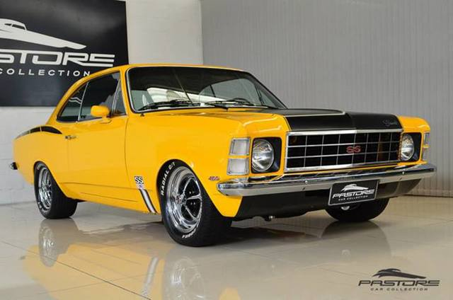

o motor poderia ser um 2.5 de quatro cilindros e 80 hp SAE (153 pol³) ou 3.8 de seis cilindros em linha de 125 hp SAE (230 pol³).
O Chevrolet Opala 1968 foi um marco na história automotiva brasileira, representando a entrada da General Motors no mercado de carros de passeio no país. Lançado em novembro de 1968, o Opala era uma versão brasileira do Opel Rekord, um modelo alemão. Com linhas elegantes e um design que combinava robustez e sofisticação, o Opala rapidamente conquistou o público brasileiro..
